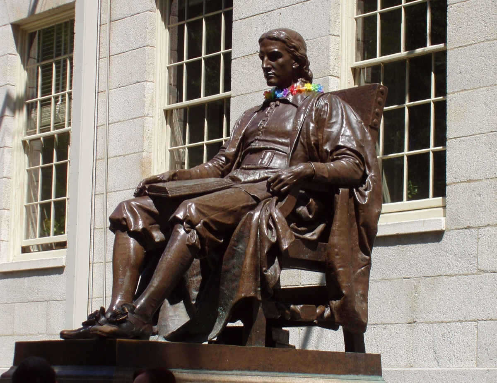
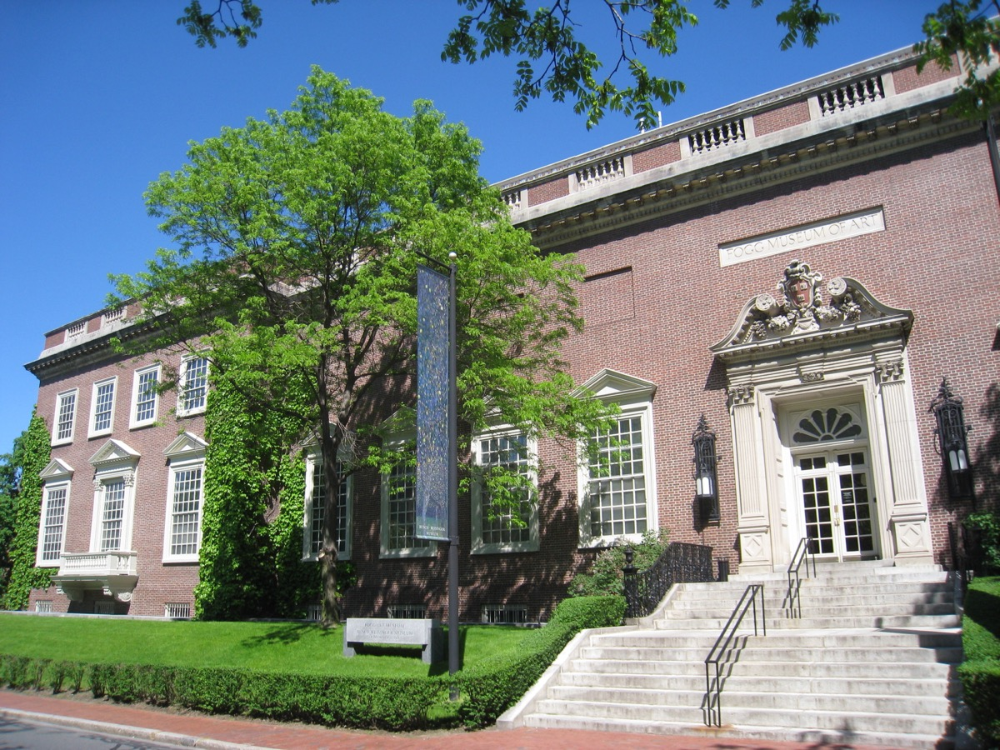
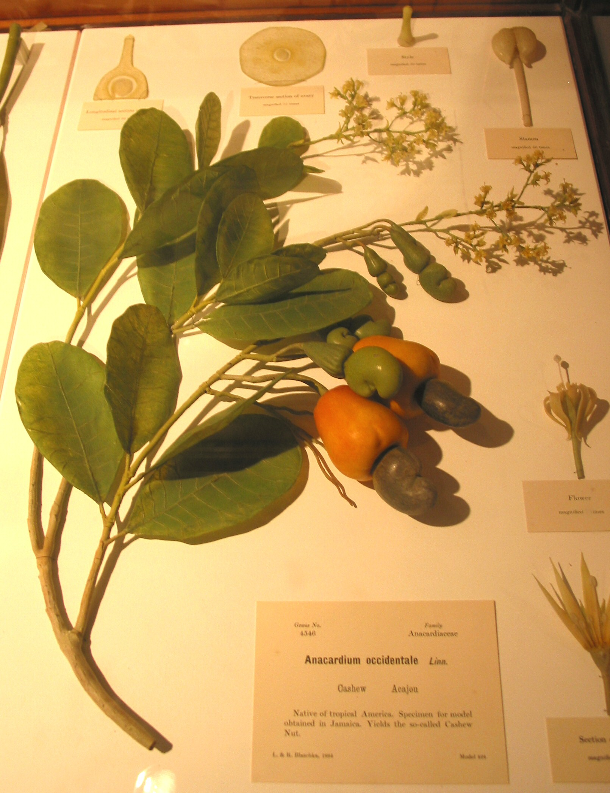
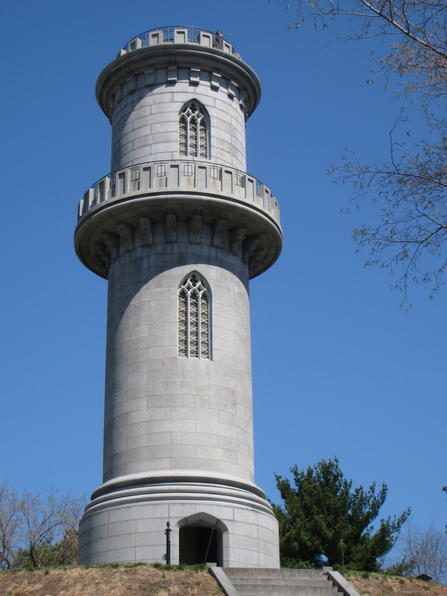
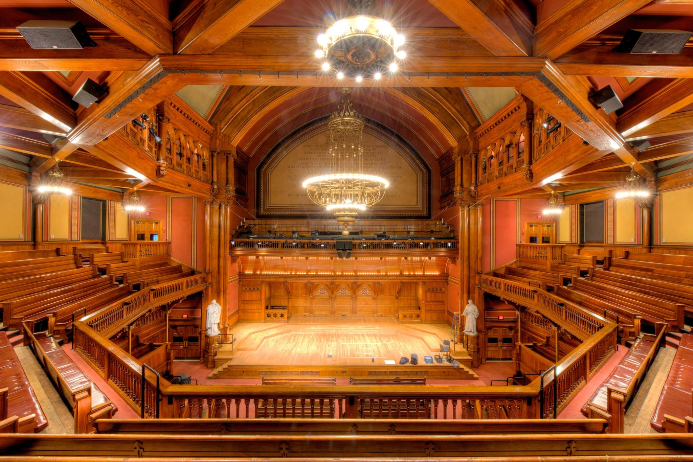

Harvard Square is not really a square. It is a triangle of pavement where Massachusetts Avenue, Brattle Street and JFK Street meet above a Red Line station. Around it, within five minutes' walk, are a free art museum, 4,000 glass flowers, five bookstores, a cinema that has shown Casablanca every year since the 1950s, and a burger place that's been cash-only since 1960.
The short answer
The 10 best things to do in Harvard Square
01 · Sights
The best things to do in Harvard Square
Campus first, then the museums, then the river.
Harvard Yard and the free campus tours

25 acres of lawn and brick, Widener Library's steps, and the John Harvard statue, known as the statue of three lies. Free student-led tours run most days.
The Harvard Art Museums

Three museums under one Renzo Piano glass roof: Italian Renaissance panels, Van Gogh's self-portrait, the best Bauhaus collection outside Germany.
The Glass Flowers

About 4,300 botanically exact glass models made in Dresden between 1887 and 1936. Ticket covers the Peabody Museum too.
Mr. Bartley's Burger Cottage
Since 1960, about thirty burgers named after politicians and celebrities. Closed Sundays, hasn't changed for anyone.
Longfellow House–Washington's Headquarters
Washington's headquarters in 1775–76, later Longfellow's home. Ranger-led tours late May–October; grounds open year-round.
The Charles River and the Weeks footbridge

A 1927 brick footbridge, the best spot on the Cambridge bank to watch rowers. Sundays, Memorial Drive closes to cars as Riverbend Park.
Mount Auburn Cemetery

The first garden cemetery in America, 175 acres and the model for Central Park. Climb the Washington Tower for a skyline view over the trees.
02 · Food & drink
Where to eat and drink in Harvard Square
Cheap at lunch, good at dinner, plus the bars that outlasted the rent increases.
Felipe's Taqueria and its roof
A two-story taqueria with a rooftop bar and heaters, open until 2am most nights. Where a night out in the square ends.
Cardullo's Gourmet Shoppe
Since 1950, imported chocolate, cheese and a sandwich counter that makes the best lunch to take into the Yard.
Alden & Harlow and Waypoint
Alden & Harlow's secret off-menu burger is a Cambridge legend. Waypoint, by the same chef, does coastal Italian and seafood.
Giulia and Russell House Tavern
Giulia is the pasta restaurant Cambridge saves up for. Russell House Tavern works for a group with mixed opinions.
Charlie's Kitchen, Grendel's Den and Shays
Charlie's has served a double cheeseburger since 1951; Grendel's won a Supreme Court case for its liquor license; Shays has a JFK Street patio.
Tatte, L.A. Burdick and Flour
Tatte is the default study café; L.A. Burdick makes the best hot chocolate in the region; Flour has sticky buns and sandwiches.
03 · Bookstores
The bookstores of Harvard Square
There were once more than twenty. Five good ones remain, and they're the square's real signature.
Harvard Book Store
Independent, never owned by the university. New books upstairs, used and remainders in the basement, author events most nights.
Grolier Poetry Book Shop
The oldest poetry bookstore in the country, a single room lined to the ceiling. The staff will find you something.
The Harvard Coop
Textbooks, Harvard gear, a big general bookstore run by Barnes & Noble. Worth a walk through for the building.
Raven Used Books
Where the professors sell their review copies: academic and literary used books at a fraction of the price. The best browse in Cambridge.
Schoenhof's (online only)
Foreign-language books; the shop closed in 2017 but survives as a mail-order business.
04 · Film & music
Film, music and nightlife in Harvard Square
The Brattle Theatre

A single-screen repertory cinema since 1953, with a Casablanca screening every year around Valentine's Day. The best cinema in the Boston area.
Club Passim
A 100-seat basement folk club since 1958 that hosted Joan Baez and Bob Dylan. Tuesday open mic is where local singer-songwriters start.
The Sinclair
A 525-capacity room with a balcony and good sound, brought touring indie rock back to the square in 2012.
The American Repertory Theater and Sanders Theatre

Harvard's professional theater company, and a 1,000-seat 1875 wooden amphitheater with some of the region's best acoustics.
05 · History
From Newtowne to the Square
Cambridge was laid out in 1630 as Newtowne. In 1636 the colony's legislature voted to found a college here, and John Harvard's books and half his estate got it named after him. For its first two centuries the square was a village center; Brattle Street's Loyalist mansions gave it the name Tory Row.
The subway arrived in 1912. The mid-1900s were the square's bohemian peak, with Club 47, the Brattle's Bogart festivals and dozens of bookstores. Since the 1990s the story has been rent, though the museums, the Brattle, Passim, the Yard and a few stubborn bookstores have held.
06 · Side streets
Side streets and beyond the square
Brattle Street and Tory Row: a mile of 1700s and 1800s mansions, seven of them Loyalist estates.
Cambridge Common and Radcliffe Yard: where the Continental Army camped, and a quiet brick quadrangle behind it.
Plympton Street and Bow Street: the Harvard Lampoon's 1909 mock-Flemish castle, the oddest building in Cambridge.
Toward Porter and Central: each about 20 minutes' walk or one Red Line stop, with Giulia, Toscanini's and the Middle East club.
07 · Events
Harvard Square events through the year
Commencement in late May fills the Yard with tents. The Head of the Charles, third weekend of October, is the largest two-day regatta in the world, and the square is packed all weekend.
MayFair (first Sunday in May) and Oktoberfest fill the closed streets with stages and food stalls. Passim hosts the Boston Celtic Music Festival in January.
08 · Tips
Tips for a first visit
Check the museum days. The Art Museums are closed Mondays; Natural History is open daily.
Bring cash for Bartley's, and go at 2pm rather than noon. Closed Sundays.
Come on a Sunday for the river. Memorial Drive closes to cars late April through mid-November.
Walk to Mount Auburn one way, bus the other. The 71 and 73 run every few minutes from the busway.
Stay for the evening. The square is better after 6pm: tour groups leave, students come out.
FAQ
Harvard Square: common questions
What is Harvard Square known for?
The commercial center of Cambridge, wrapped around Harvard's original campus. Known for the Yard, the free Art Museums, the Glass Flowers, independent bookstores, the Brattle Theatre, Club Passim and being ten minutes from Boston on the Red Line.
How do you get to Harvard Square from Boston?
Red Line outbound to Harvard station, about 10 minutes from Park Street. The station exits directly into the square.
Can you visit Harvard Yard without a tour?
Yes. The Yard is open to the public any time. Free student-led tours run most days from the Smith Campus Center; book ahead in busy months.
Are the Harvard museums free?
The Harvard Art Museums have been free since 2023, closed Mondays. The Natural History Museum with the Glass Flowers charges ~$15, and covers the Peabody Museum too.
How long should you spend in Harvard Square?
Half a day covers the Yard, one museum, a bookstore and lunch. A full day adds the second museum, the river or Mount Auburn, and a show in the evening.
Is Harvard Square worth visiting at night?
Yes. The Brattle, Club Passim, the Sinclair, Felipe's rooftop and good bars are all within a two-minute walk, and it's calmer than Boston's nightlife districts.